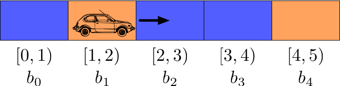

Robot Localization II: The Histogram Filter
This is part 2 in a series of articles explaining methods for robot localization, i.e. determining and tracking a robot's location via noisy sensor measurements. You should start with the first part: Robot Localization I: Recursive Bayesian Estimation
Idea
The Histogram Filter is the most straightforward solution to represent continuous beliefs. We simply divide $dom(x_t)$ into $n$ disjoint bins $b_0, ..., b_{n−1}$ such that $\cup_i b_{i} = dom(x_t)$. Then we define a new state $x_t^\prime \in \{0, ..., n − 1\}$ where $x_t^\prime = i$ if and only if $x_t \in b_i$. Since $x_t^\prime$ has a discrete, finite state space, we can use the discrete Bayes Filter to calculate $bel(x_t^\prime)$.
$bel(x_t^\prime)$ is an approximation for $bel(x_t)$ then: For each bin $b_i$, it gives us the probability that $x_t$ is in that bin. The more bins we use, the more accurate the approximation becomes, with the downside of increasing computational complexity.
Example
To make this more clear, we shall apply the Histogram Filter to a global localization example as displayed in the following image:

A self-driving car lives in a one-dimensional, cyclic world that is 5 meters wide. By cyclic, we mean that if it is in the rightmost cell and moves one step to the right, it's back in the leftmost cell. The robot’s position at each time step is given as $pos_t \in [0, 5)$, which is the only state variable. It has a sensor that is, under uncertainty, able to tell the color of the wall next to it. We assume that the car is constantly moving right under noise, at an expected speed of one meter per time step.
In order to apply the Histogram Filter, we choose the following decomposition of the state space: $b_0 = [0, 1)$, $b_1 = [1, 2)$, $b_2 = [2, 3)$, $b_3 = [3, 4)$, $b_4 = [4, 5)$. This way, the position can be measured as a discrete variable $pos_t^\prime \in \{0, ..., 4\}$, which is an estimate of the true, continuous position. Each discrete position corresponds to exactly one of the distinguished grid cells in the above image.
We can now specify the transition and sensor models. We assume that the car intends to move exactly one grid cell to the right at each time step, but that the inaccuracy of the motor causes it to move 2 grid cells in 5% of the cases, not move at all in 5% of the cases and move exactly 1 grid cell in 90% of the cases. This results in the following transition model:
$$\begin{align*} P(pos_t^\prime = x + 2 \; mod \, 5 \; \vert \; pos_{t−1}^\prime = x) = 0.05\\ P(pos_t^\prime = x + 1 \; mod \, 5 \; \vert \; pos_{t−1}^\prime = x) = 0.9\\ P(pos_t^\prime = x \; \vert \; pos_{t−1}^\prime = x) = 0.05 \end{align*}$$
As for the sensors, we assume that in 90% of the cases the measured color is correct and in 10% of the cases it is incorrect, yielding the following sensor model:
$$\begin{align*} P(MeasuredColor_t = Blue \; \vert \; pos_t^\prime = 0, 2, 3) = 0.9\\ P(MeasuredColor_t = Orange \; \vert \; pos_t^\prime = 0, 2, 3) = 0.1\\ P(MeasuredColor_t = Blue \; \vert \; pos_t^\prime = 1, 4) = 0.1\\ P(MeasuredColor_t = Orange \; \vert \; pos_t^\prime = 1, 4) = 0.9 \end{align*}$$
Let’s now use the discrete Bayes filter to calculate the car's belief for three time steps where the sensor measurements are Orange, Blue and Orange in that order. We assume that the car starts at the very left (but it does not know that it does) and travels exactly one grid cell to the right per time step (which it does not know either). We can represent the belief as a 5-dimensional row vector $bel(pos_t^\prime) = (bel_{t,1}, bel_{t,2} bel_{t,3}, bel_{t,4}, bel_{t,5})$ where $bel_{t,i}$ represents the probability that the robot is in cell $i$ at time-step $t$.
t = 0
The car has no prior knowledge about its position. Thus, it starts out with the following belief:
$bel(pos_0^\prime) = (0.2, 0.2, 0.2, 0.2, 0.2)$
t = 1
First, it projects the previous belief to the current time step:
$\overline{bel}(pos_1^\prime) =
\sum_{pos_0^\prime} P(pos_1^\prime \; \vert \; pos_0^\prime) \cdot bel(pos_0^\prime)$
$= (0.05, 0.9,
0.05, 0.0, 0.0) \cdot 0.2 + (0.0, 0.05, 0.9, 0.05, 0.0) \cdot 0.2$
$+ (0.0, 0.0, 0.05, 0.9, 0.05)
\cdot 0.2 + (0.05, 0.0, 0.0, 0.05, 0.9) \cdot 0.2$
$+ (0.9, 0.05, 0.0, 0.0, 0.05) \cdot 0.2
= (0.2, 0.2, 0.2, 0.2, 0.2)$
This results in the same belief as before, which shouldn’t surprise us, since each cell was equally likely to be the car's position at time $t = 0$ and therefore, since the robot just moved blindly, each cell is still equally likely to be its position at time $t = 1$.
Now the robot updates the projected belief with the sensor input:
$bel(pos_1^\prime) = \eta \cdot P(MeasuredColor_1 = Orange \; \vert \; pos_1^\prime) \cdot
\overline{bel}(pos_1^\prime)$
$= \eta \cdot (0.1, 0.9, 0.1, 0.1, 0.9) \cdot (0.2, 0.2, 0.2, 0.2,
0.2)$
$= \eta \cdot (0.02, 0.18, 0.02, 0.02, 0.18)$
$= (0.04762, 0.42857, 0.04762, 0.04761,
0.42857)$
where the last step follows by dividing the vector by the sum over all vector values so that the probabilities sum up to 1. We can see that each of the two orange cells are equally likely to have caused the sensor measurement. Thus, the robot currently has two salient theories on where it might be.
t = 2
$\overline{bel}(pos_2^\prime) = \sum_{pos_1^\prime} P(pos_2^\prime \; \vert \; pos_1^\prime) \cdot
bel(pos_1^\prime)$
$= (0.39048, 0.08571, 0.39048, 0.06667, 0.06667)$
$bel(pos_2^\prime) = \eta \cdot P(MeasuredColor_2 = Blue \; \vert \; pos_2^\prime) \cdot
\overline{bel}(pos_2^\prime)$
$= \eta \cdot (0.9, 0.1, 0.9, 0.9, 0.1) \cdot (0.39048, 0.08571,
0.39048, 0.06667, 0.06667)$
$= (0.45165, 0.01102, 0.45165, 0.07711, 0.00857)$
t = 3
$\overline{bel}(pos_3^\prime) = \sum_{pos_2^\prime} P(pos_3^\prime \; \vert \; pos_2^\prime) \cdot
bel(pos_2^\prime)$
$= (0.03415, 0.40747, 0.05508, 0.41089, 0.09241)$$bel(pos_3^\prime) = \eta \cdot
P(MeasuredColor_3 = Orange \; \vert \; pos_3^\prime) \cdot \overline{bel}(pos_3^\prime)$
$= \eta \cdot
(0.1, 0.9, 0.1, 0.1, 0.9) \cdot (0.03415, 0.40747, 0.05508, 0.41089, 0.09241)$
$= (0.00683,
0.73358, 0.01102, 0.08219, 0.16637)$
We can see that after 3 time steps the robot is already about 73% certain that it is in the second grid cell. After another 3 time steps of travelling right and sensing the correct colors, it is 94% certain about its position.
The disadvantage of the Histogram Filter is obvious: We are not able to tell the probability of each possible state. We are only able to tell the probability that the state is in a certain region of the state space. This disadvantage might be circumvented by using a very fine-grained decomposition of the state space, but this drastically increases the computational complexity.
Continue with the next part: Robot Localization III: The Kalman Filter